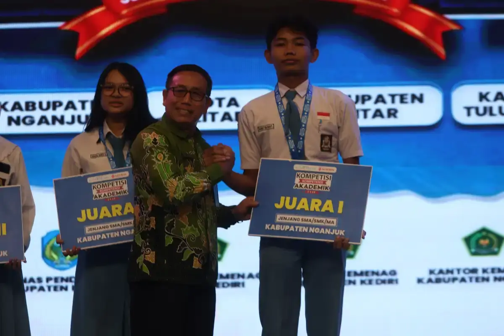
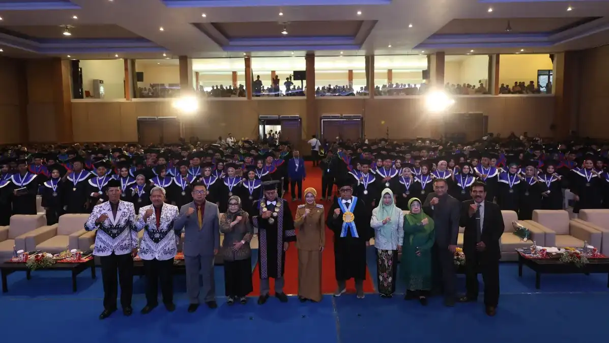
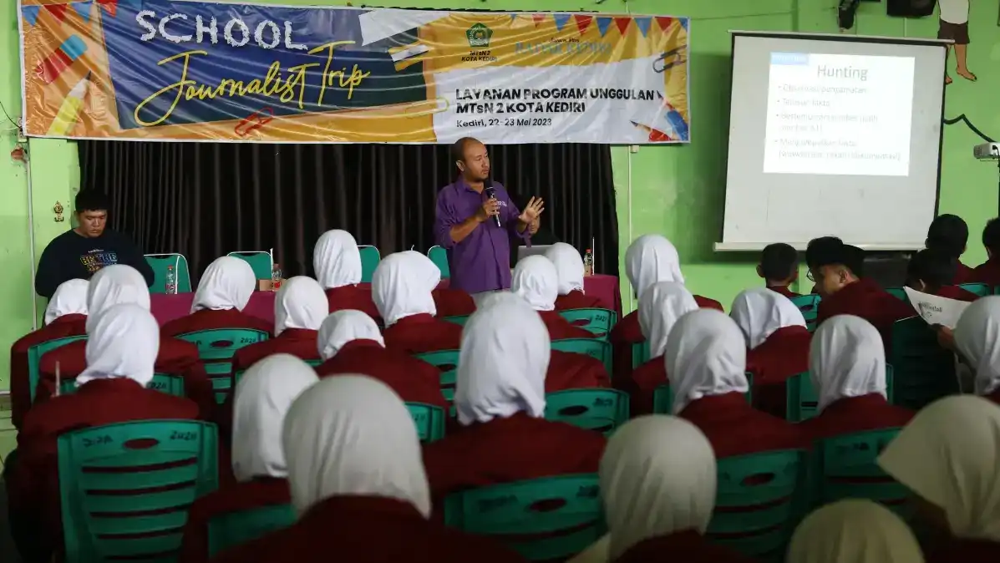
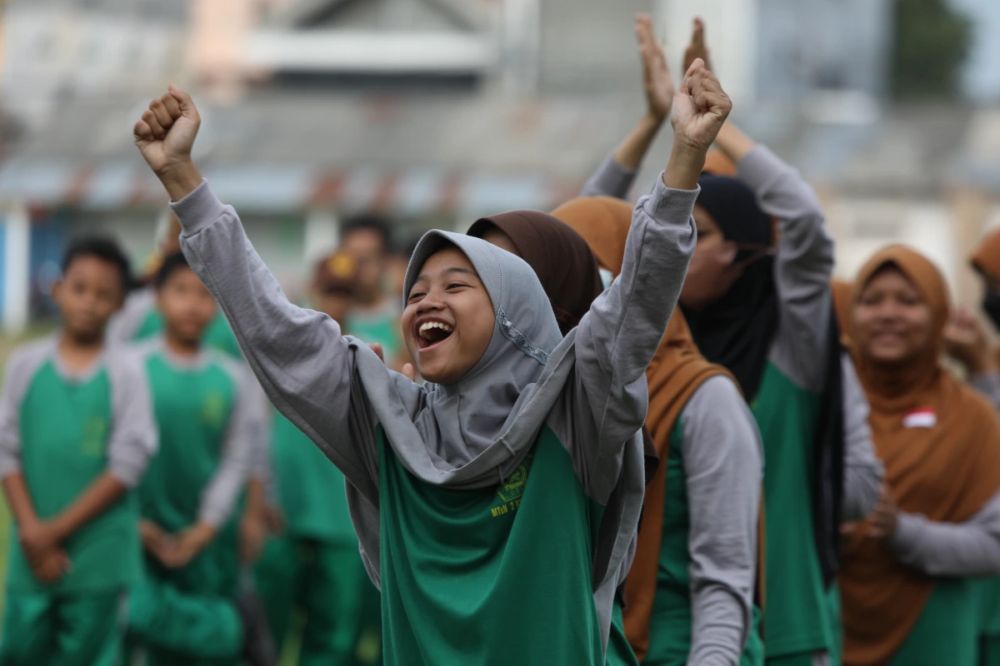

Portofolio
Dokumentasi program unggulan dan pencapaian strategis Radar Kediri Institute dalam membangun sumber daya manusia yang kompeten.
Temukan Keunggulan Edukasi Bersama Kami
Kami berkomitmen untuk memberikan pengalaman belajar yang transformatif melalui berbagai skema pelatihan media dan vokasi.
Setiap program kami dirancang oleh praktisi profesional untuk memastikan materi yang disampaikan benar-benar relevan dengan kebutuhan dunia kerja saat ini.
+
Program Vokasi
Modul Spesialis
%
Tingkat Kelulusan
:1
Rasio Mentor-Peserta
Program & Kegiatan Kami
Jelajahi berbagai dokumentasi kegiatan Radar Kediri Institute
- Semua
- Event
- Digital
- Soft Skill
- Edukasi

Dies Natalis
Perayaan hari jadi dengan rangkaian kegiatan edukatif dan apresiasi seni.
Hubungi admin
Digital Marketing
Pelatihan strategi pemasaran digital, SEO, dan pengelolaan iklan medsos.
Hubungi admin


Pelatihan Jurnalistik
Pelatihan teknik peliputan, penulisan berita, dan kode etik pers.
Hubungi admin




Instruktur & Mentor Kami
Belajar langsung dari para praktisi berpengalaman dan pemimpin industri media

Dr. Michael Reynolds
Pakar Literasi Media

Dr. Sarah Johnson
Spesialis Komunikasi Publik

Dr. Robert Chen
Analisis Bisnis Media

Dr. Emily Davis
Mentor Jurnalistik Digital